arXiv 2609.07398 · cs.RO · v1 2026 年 9 月 7 日 · 中文精读
OpenWAM: An Open, Modular Exploration Towards Systematic World–Action Model Pretraining
作者 Yuran Wang、Siqiao Huang、Mingleyang Li、Chenhao Zhang、Jiaqi Liang 等 24 人，项目负责 Lin Shao、Hang Zhao；来自新加坡国立大学、清华、北大、港大、浙大、港中文、上海交大。
不要和同名项目搞混。还有一篇不相干的 Stanford 工作也叫 OpenWAM：《OpenWAM: An Open Framework for Composable World-Action Models》（arXiv 2610.07922，2026-10-06，代码 OpenWAM/OpenWAM，AGPL-3.0）。本页只讲 2609.07398。Hugging Face 上的 OpenWAM 组织属于本篇：它的 46 个模型（OpenWAM-Alpha 的 14 个和 OpenWAM-Study 的 32 个消融检查点）的模型卡都引用 arXiv 2609.07398、链接 OpenWAM-Official 的代码；2610.07922 的摘要页只链接 GitHub，没有 Hugging Face 链接（读者注 1）。
关于这份精读。论文在 arXiv 上以 CC BY 4.0 发布，PDF 页脚没有和它矛盾的版权声明。我按原文顺序覆盖正文 6 节和附录 A 到 D，小节编号同原文，用自己的话写，不是逐字翻译。公式按原文编号，表格数字照录原文。
图 1、2、3、5、8、9、12、13、14、15、17 从 arXiv PDF（v1）裁切，只做了裁切和格式转换，版权归 Yuran Wang 等作者，按 CC BY 4.0 使用；图下的文字是我写的。柱状图和点图（图 4、6、7、10、11、16）我把图上标注的数字抄成了表，没有放原图；附录里的实拍照片（图 18 到 21）只用文字说明并给出原页链接。本页的“读者注”是我核算或对照发现的，不属于论文内容，页尾有汇总。
代码和检查点。官方代码 OpenWAM-Official/OpenWAM，Apache-2.0。我读的是 commit 1dcaeea（2026-11-12），只读，没有运行。我还读了 Hugging Face 上 OpenWAM-Alpha-Pretrain-Foundation-Model 和 OpenWAM-Alpha-Sim-LIBERO 的模型卡、文件列表和 config.yaml（没有下载权重），以及数据集 OpenWAM/LIBERO 的 meta/info.json 和 meta/conversion.json。项目主页仓库是 MIT 许可（另声明校徽和模型标志不在许可内），我只链接，没有抓取。
2026-11-16 用 Hugging Face API 列出 author=OpenWAM 的模型：46 个，全部创建于 2026-09-04 到 09-05（在 2609.07398 提交前后），名字是 OpenWAM-Alpha-*（14 个）和 robotwin_* / pretrain_* / sft_*（32 个，对应 §4 的消融）。我读的两张模型卡都引用 2609.07398、链接 OpenWAM-Official/OpenWAM；本篇代码的下载脚本 download_openwam_checkpoints.py 也从 OpenWAM/<名字> 下载。2610.07922（Heng Yu 等，Stanford）的摘要页只有 GitHub 链接 OpenWAM/OpenWAM（AGPL-3.0，仓库描述写着 Stanford University），没有 Hugging Face 链接。所以 HF 的 OpenWAM 组织属于本篇。我只读了两张卡，其余 44 张没有逐张打开。
世界-动作模型（World–Action Model，WAM）从视频生成模型继承“世界会怎样变化”的先验，再用机器人数据学会输出动作。现有系统把生成骨干、视觉表示、网络结构、信息流、推理过程、训练数据绑在一起，很难说清哪个选择真正起作用。
OpenWAM 是一套开放的研究栈，分三块：
主要数字：LIBERO 平均 99.3%，RoboTwin2.0-Full 93.60%，EBench SR 49.4（第一），RoboTwin2.0-Clean2Random 69.0，LIBERO-Plus 只有 69.2（明显落后）。真机单臂 82.5%，RoboDojo 真机赛道总分第一。
读完我认为最值得记住的三点：
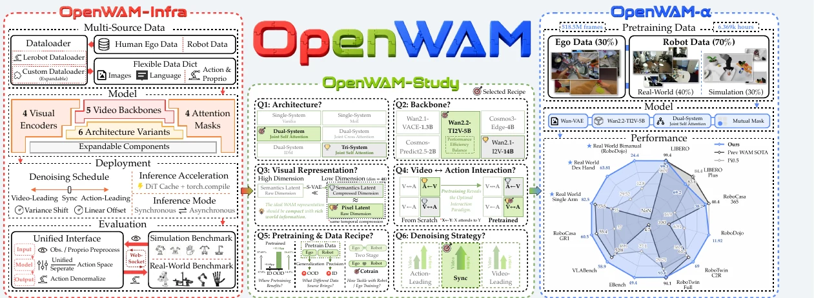
数据不对称。世界变化的视频很多，带可执行动作标签的机器人轨迹很少。ACT、Diffusion Policy 只从机器人演示里同时学视觉和控制；VLA（视觉-语言-动作模型）从视觉-语言模型继承语义；WAM 则从视频生成模型继承视觉动力学先验，再用具身经验去适配。视频生成本来就是建模时间演化，所以是学习“动作怎样引起物理变化”的直接起点。
核心假设是协同。WAM 的意义不只是拿视频模型初始化策略，而是世界预测和动作生成能互相帮助：世界建模提供状态、动力学和可能未来的知识，动作学习让模型关注对控制有用的变化。但这不容易：有用的知识藏在上游模型的不同部分；名义上的联合预测可能没有有效的信息通路；在一个域里好用的设计换了场景或机器人可能就不行。由此提出三个问题：
这在“整体式”系统里没法回答，所以作者做了 OpenWAM：Infra（§3）把设计空间拆成模块；Study（§4）得出三条结论；α（§5）把结论组合成一个预训练模型，在 8 个仿真基准（5 类机器人形态）和单臂、双臂、灵巧手真机上评测，并公开全部代码、评测协议、权重和数据配方。
世界-动作模型。世界模型一直用于规划、基于模型的强化学习和策略评测。WAM 更直接：它本身就是策略。和主要继承语义的 VLA 不同，WAM 从视频生成先验出发。现有系统的结构、训练、数据、采样调度往往一起变，看不出哪部分在传递世界知识。
开放的通用策略生态。OpenVLA 给出开放权重基线，StarVLA 提供模块化平台，StarVLA-α 是极简的预训练模型，XPolicyLab 提供统一的评测与部署标准。WAM 社区还缺这样的生态。
把模型设计当实验科学。Cambrian-1、Beyond Language Modeling、Towards Physics of Multimodal Pretraining 在多模态里做受控变量研究；机器人里有对动作分块（action chunking）、生成式控制策略、大行为模型（LBM）联合训练、OpenHLM 的分析。OpenWAM 把这套方法带到 WAM。
现有 WAM 各自围绕一种设计搭建，模型、训练、服务、评测互相耦合：难扩展，而且模块之间互相干扰，会混淆受控比较的结论。Infra 拆成四个组件，彼此独立或只有单向依赖：组合式模型（§3.1）、训练运行时（§3.2）、部署运行时（§3.3）、评测协议（§3.4）。
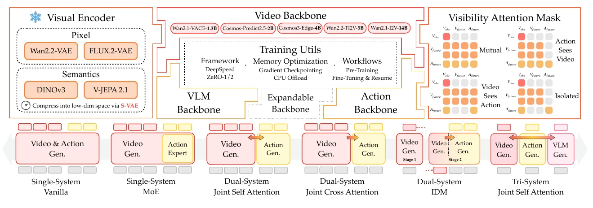
一个 WAM 写成 \(C(\mathcal E,\mathcal S,\mathcal M)\)：视觉编码器 \(\mathcal E\) 把观测变成世界流要预测的隐变量序列；流骨干 \(\mathcal S\) 处理各个 token 流（世界流 \(\mathcal W\)、动作流 \(\mathcal A\)，可选理解流 \(\mathcal U\)）；可见性注意力掩码 \(\mathcal M\) 规定哪些 token 能看哪些；组合规则 \(C\) 把它们装成具体结构。
视觉编码器始终冻结。默认用视频骨干原配的编码器，这样 DiT 的预训练参数能直接复用；也可以换编码器，并把 DiT 重新随机初始化以排除预训练参数的影响。目前提供两个重建式编码器（Wan2.2-VAE、FLUX.2-VAE）和两个表示式编码器（DINOv3、V-JEPA 2.1），外加可选的 S-VAE 降维模块。
流骨干都遵守同一个执行约定：prepare（进栈前把输入嵌入成初始状态）、逐层 block step、finalize（映射成预测）。每层还可以拆成注意力前半（产出 Q、K、V）和后半（消费注意力输出），这样注意力本身能跨流联合计算。视频骨干支持 Wan2.1-VACE-1.3B、Cosmos-Predict2.5-2B、Cosmos3-Edge-4B、Wan2.2-TI2V-5B、Wan2.1-I2V-14B；VLM 只支持 Qwen3-VL 系列；动作骨干要么是独立参数的 ActionDiT，要么把动作 token 塞进视频序列共享视频骨干。
可见性注意力掩码按模态分块：
\(\mathcal M_{X\leftarrow Y}\) 表示 X 模态的 token 能否看 Y 模态的 token。两个模态内块固定：\(\mathcal M_{V\leftarrow V}\) 用“首帧因果”——带噪的帧互相看、也看干净的首帧，干净首帧只看自己，免得条件被噪声污染；\(\mathcal M_{A\leftarrow A}\) 双向，一个动作块里的动作互相可见。两个跨模态块组合出四种模式：Mutual（互相看）、Action Sees Video（只开 \(\mathcal M_{A\leftarrow V}\)）、Video Sees Action（只开 \(\mathcal M_{V\leftarrow A}\)）、Isolated（都关，各自独立去噪）。
结构。组合规则自己没有参数，只通过上面的执行约定安排各骨干的阶段，必要时替换注意力计算，不改骨干内部。目前三族：
所有模块从注册表实例化，组合完全由配置决定，训练器和策略服务器都不知道跑的是哪种结构。
训练目标。一个样本是 \((\ell,o_{1:T},a_{1:H},q,m)\)：语言指令、视频窗口、动作块、可选本体状态、逐维有效掩码。编码器把 \(o_{1:T}\) 变成隐变量 \(z\)，\(\ell\)（可加 \(q\)）变成上下文 \(c\)。全文约定 \(t=0\) 是纯噪声、\(t=1\) 是干净数据。两流各有自己的时间步：\(z^{t_v}=t_vz+(1-t_v)\epsilon_v\)，\(a^{t_a}=t_aa+(1-t_a)\epsilon_a\)。一次联合前向 \((\hat v_z,\hat v_a)=v_\theta(z^{t_v},a^{t_a},t_v,t_a,c)\) 预测两个速度，损失是
\(m\) 只让机器人实际有的坐标参与动作损失，干净的条件帧不算视频损失。因为 \(t_v,t_a\) 独立采样，训练覆盖整个 \((t_v,t_a)\) 噪声平面，所以推理时同步或异步的任何调度都是在平面上走一条路径，仍在训练分布内。
训练工具。DeepSpeed ZeRO 1/2 经 Accelerate 接入，默认 bf16，梯度累积、梯度裁剪，单卡到多机一个入口；梯度检查点（可把激活卸载到 CPU）、优化器状态卸载。三种流程：预训练（新跑）、微调（从检查点初始化，结构按检查点自己的记录重建，新配置叠加，权重所属模块的身份不允许被覆盖）、续训（完全恢复优化器、调度器和数据位置；数据集的归一化统计和记录不一致时拒绝继续）。
自包含检查点包括权重、完全解析的配置（含各模块的重建说明和分词器等）、动作归一化统计。微调、续训、部署都先按它重建结构再加载参数；部署时缺归一化记录直接报错。所以评测不会悄悄换掉编码器、动作布局或缩放。
每个检查点由同一个策略服务器提供服务，“什么时候推理”（推理模式）和“两流怎样去噪”（去噪调度）互相独立。
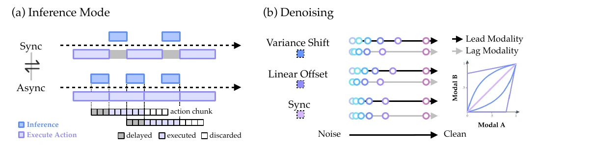
推理模式。每次推理产生一个动作块放进缓冲区，服务器每次请求弹出一个动作。同步：缓冲区空了才推理，执行会停顿一个推理延迟。异步：设块长 \(H\)、推理视野 \(n\le H\)、提前量 \(d<n\)（默认 \(n/2\)）；缓冲区只剩 \(d\) 个时后台预取下一块。新块依次分成三段：前 \(d\) 个（推理期间已被旧缓冲执行，跳过）、接着 \(n\) 个（新的缓冲）、剩下 \(\max\{H-d-n,0\}\) 个丢弃。对客户端两种模式没有区别：一个观测进，一个动作出。
去噪调度是噪声平面上的一条路径 \(\tau=\{(t_v^i,t_a^i)\}_{i=0}^N\)。同步调度沿对角线走：每步一次联合前向，然后耦合的 Euler 更新 \(z^{t_v^{i+1}}=z^{t_v^i}+(t_v^{i+1}-t_v^i)\hat v_z\)，动作同理。异步调度让一流领先，有两族（来自 Latent Forcing）：
\(s=i/N\) 是全局进度。\(\alpha>1\) 时方差平移曲线 \(f_\alpha\) 把领先流抬到对角线上方，让它更早变干净；线性偏移 \(h_o\) 让落后流在进度超过 \(o\) 之前一直保持纯噪声。领先的是世界流就叫 video-lead，反之 action-lead。\((\alpha,o)=(1,0)\) 精确回到对角线，所以同步只是特例，不是另一条代码路径。每流的时间步扭曲（warp）是骨干的属性，存在检查点里，训练和推理的噪声网格不会漂移。
加速。四项都可单独开关：提示词嵌入缓存（文本编码器移出请求路径）；跳过视频解码（控制只要动作，不解 VAE）；编译（每种结构注册固定形状的 torch.compile 路径，用 CUDA graph 重放，第一次请求负责预热）；DiT 速度缓存（两流最近的速度预测余弦相似度超过阈值时，跳过下一次联合前向，直接积分缓存的速度，连续跳过次数有上限）。
图 4 · RTX 5090 上的推理延迟（Wan2.2-TI2V-5B 视频骨干；提示词缓存和跳过解码默认开启；“基线”一列是我用延迟 × 加速比反推的，不是原图数字）· 看原图 ↗
| 结构 | 缓存 + 编译 | 加速比 | 反推基线 |
|---|---|---|---|
| 单系统 Vanilla | 149 ms | 2.49× | ≈371 ms |
| 单系统 MoE | 156 ms | 2.50× | ≈390 ms |
| 双系统 联合自注意力 | 175 ms | 2.45× | ≈429 ms |
| 双系统 联合交叉注意力 | 180 ms | 2.63× | ≈473 ms |
| 双系统 IDM | 251 ms | 2.01× | ≈505 ms |
| 三系统 联合自注意力 | 216 ms | 2.33× | ≈503 ms |
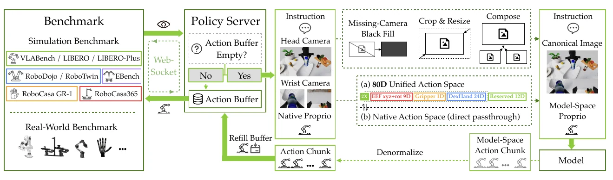
客户端-服务器。基准只是一个瘦客户端，一条持久 WebSocket，不导入任何模型或训练代码。第 \(k\) 步发 \((o_k,\ell,q_k)\)：最多三路相机（头部必需，腕部可选）、指令、可选原始状态；收回一个物理单位的动作 \(a_k\)。所有面向模型的转换都在服务器端按检查点完成：裁剪、缩放、拼成训练时的画布，缺的相机填黑；状态归一化并映射；模型输出的 \(\hat a_{1:H}\) 映射回去、反归一化后补进缓冲区。归一化后的值永远不会到达机器人。每个回合之间发一次 reset。
基准。8 个：LIBERO（论文）、LIBERO-Plus（论文）、VLABench（论文）、RoboTwin 2.0、RoboDojo（论文）、RoboCasa365、RoboCasa-GR1（任务仓库，GR00T N1 论文）、EBench（论文页）。覆盖单臂、双臂桌面操作、灵巧手人形和移动操作。真机走同一接口。每个适配器复现该基准训练读取器的观测预处理。
动作空间。默认用基准原生空间：RoboTwin2.0 用 14 维关节或 20 维双臂末端；LIBERO 用 10 维末端。跨形态训练时用 80 维统一动作空间 \(u\in\mathbb R^{80}\)，槽位语义固定：两个镜像的 34 维手臂块（末端位置 3、6D 旋转 6、夹爪 1、灵巧手 24），再加 12 个保留槽（如 EBench 和 RoboCasa365 的移动底盘）。每个数据集声明一个从原生维度到槽位的索引映射 \(\pi\)：
本体状态也走同一个映射。式 (2) 的 \(m\) 正好标出被映射的槽，没映射的坐标没有梯度，推理时停在解析的噪声路径上。
评测设定。本节全部用 RoboTwin2.0（50 多个双臂任务），成功率为指标，两种设定：
知识有两个来源：视频生成骨干里的生成式先验，和视觉编码器诱导的表示空间。
双系统联合自注意力，视频模块从预训练视频模型拷贝参数，换四种骨干，RoboTwin2.0-Full 平均成功率（图 6）：
图 6 · 视频骨干大小（图上标注的数字）· 看原图 ↗
| 骨干 | 参数 | 平均成功率 % |
|---|---|---|
| Wan2.1-VACE | 1.3B | 90.14 |
| Cosmos-Predict2.5 | 2B | 91.64 |
| Wan2.2-TI2V | 5B | 92.39 |
| Wan2.1-I2V | 14B | 93.79 |
骨干越大越好，14B 最好；5B 只差 1.40 点，参数不到三分之一，所以后面都用 5B。作者也说明这些骨干在结构、数据、目标上都不同，所以不把差别全部归于参数量。
编码器分两类：重建式（只做像素重建，目标是压缩）和表示式（自监督或多模态学习，语义结构好）。这组实验沿用 Wan2.2-TI2V-5B 的结构但随机初始化权重，只看表示本身的作用。重建式用 Wan2.2-VAE（4 倍时间压缩）和 FLUX.2-VAE；表示式用 DINOv3 和 V-JEPA 2.1。没有时间压缩的编码器一律把每 4 帧特征平均，强加 4 倍时间压缩。表示式特征维度高（DINOv3 768 维，V-JEPA 2.1 1024 维），直接用会和 DiT 不匹配，所以另加一个变体：训练 S-VAE 把它压到 48 维（和 Wan2.2-VAE 一样）。
图 7 · 视觉表示先验，RoboTwin2.0-Full 平均成功率（图上标注的数字）· 看原图 ↗
| 编码器 | 类别 | % |
|---|---|---|
| DINOv3 不加 S-VAE | 表示式 | 76.42 |
| V-JEPA 2.1 不加 S-VAE | 表示式 | 80.91 |
| FLUX.2-VAE | 重建式 | 84.26 |
| V-JEPA 2.1 加 S-VAE | 表示式 | 88.46 |
| DINOv3 加 S-VAE | 表示式 | 90.18 |
| Wan2.2-VAE | 重建式 | 90.30 |
直接用表示式编码器不如 FLUX.2-VAE；压缩后两者都明显超过 FLUX.2-VAE，DINOv3 加 S-VAE 几乎追平 Wan2.2-VAE。作者把剩下的差距归于 Wan2.2-VAE 本来就配这个骨干、时间压缩是学出来的而不是平均出来的。结论：关键不是“重建式还是表示式”，而是隐变量本身是否紧凑（时间和 token 维度）且信息丰富。
结论 1：WAM 继承上游世界知识，靠足够强的生成骨干和紧凑、信息丰富的视觉表示空间。重建式编码器不是唯一选择，降维后的表示式编码器也很好。
图 7 的 Wan2.2-VAE 一行是同结构、随机初始化，90.30；图 6 的 5B 一行是同结构、拷贝预训练权重，92.39。两者相差 2.09 点，可以看成“视频生成预训练权重”在这个设定下的贡献。这是我把两张图放在一起算的，论文没有这样比较；两组实验是否在其他方面完全相同（比如训练步数），论文没写。
需要三个层面的决定：动作专用容量放在哪；训练时开放哪些跨模态信息通路；推理时是否保持训练时学到通路所依赖的噪声状态关系。
表 1 · 结构消融，RoboTwin2.0-Full 成功率 %（照录原文）
| 系统 | 变体 | Clean | Randomized | 平均 |
|---|---|---|---|---|
| 单系统 | Vanilla | 85.20 | 85.80 | 85.50 |
| MoE | 86.22 | 83.04 | 84.63 | |
| 双系统 | 联合自注意力 | 92.34 | 92.38 | 92.36 |
| 联合交叉注意力 | 87.86 | 88.64 | 88.25 | |
| 截断梯度的交叉注意力 | 92.06 | 91.64 | 91.85 | |
| IDM | 87.76 | 88.14 | 87.95 | |
| 三系统 | 联合自注意力 | 92.84 | 92.36 | 92.60 |
论文说从单系统到双系统再到三系统容量增加、成绩持续提高；双系统里联合自注意力最强，三系统总体最好。为了在复杂度和性能间平衡，也为了排除 VLM 理解特征的影响，后面都用双系统联合自注意力。
七行的平均都等于 (Clean + Randomized)/2，四舍五入后一致。但“持续提高”只在族的最好成绩上成立（85.50 → 92.36 → 92.60）。族内不单调：MoE 加了动作专家反而低于 Vanilla（84.63 < 85.50）；双系统里交叉注意力（88.25）和 IDM（87.95）只比单系统高 2.5 到 2.8 点，而截断梯度的交叉注意力（91.85）比不截断的高 3.6 点，说明让动作梯度回传到视频流在这个设定下有害。三系统比双系统只高 0.24 点，在读者注 4 说的波动以内。
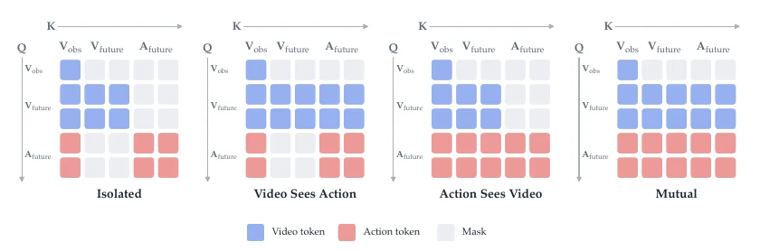
表 2 · 动作学习需要看到世界信息，RoboTwin2.0-Full 成功率 %（照录原文）
| 掩码 | Clean | Random. | 平均 |
|---|---|---|---|
| Isolated | 88.08 | 86.74 | 87.41 |
| Video Sees Action | 87.92 | 87.34 | 87.63 |
| Action Sees Video | 92.98 | 91.80 | 92.39 |
| Mutual | 92.50 | 91.80 | 92.15 |
按“动作流能否看到世界特征”干净地分成两组：看不到的低约 5 点（92.39 − 87.41 = 4.98）。反方向（视频看动作）从头训练时几乎没影响，所以 Action Sees Video 和 Mutual 都保留，等预训练后再比。
§4 的“默认设定”是双系统联合自注意力 + Wan2.2-TI2V-5B + 从头训练（不做具身预训练）+ RoboTwin2.0-Full。这个设定在不同地方的平均成功率：
如果这些是同一配置的不同次运行，那么最大差 93.0 − 92.15 = 0.85 点，可以粗看作一次运行之间的波动。论文没有给重复次数或方差。按这个尺度看：Action Sees Video 和 Mutual 差 0.24、三系统和双系统差 0.24、所有异步调度和同步差 0.7 到 4.5（只有方差平移 action-lead 的几个差得多）、预训练后 Mutual 比 Action Sees Video 多 0.16 到 0.72，这些里面不少在 0.85 以内。我认为它们是“没变差”的证据，不足以说明“更好”。这是我的判断，没有逐次结果无法检验。
四行平均都等于两列之和除以 2：(88.08+86.74)/2 = 87.41，(87.92+87.34)/2 = 87.63，(92.98+91.80)/2 = 92.39，(92.50+91.80)/2 = 92.15。文中“约五点”是 4.98 和 4.76。
训练时的注意力掩码是“全遮”，推理时的去噪调度则是“半遮”的软门控。这组实验固定 Mutual，两流噪声独立采样，然后在推理时试式 (3) 的两族调度：\(\alpha\in\{4,8,16,32\}\)、\(o\in\{0.2,0.4,0.6,0.8\}\)，各自两个领先方向。
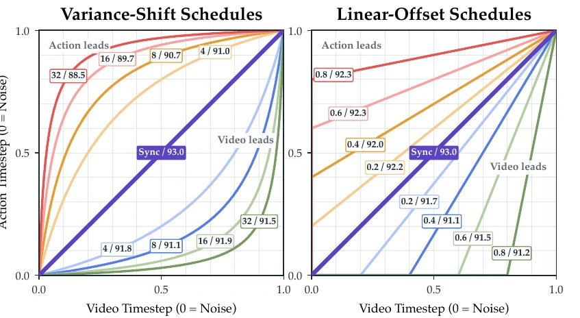
同步最好，没有一种异步调度能提高成绩。方差平移下视频领先好于动作领先，线性偏移下反过来。作者的解读：训练时需要显式的“世界到动作”信息流，但在推理时用调度强加这种先验没有好处，这支持 Fast-WAM 的“表示学习”观点，而不是“先想象、再做 IDM”的测试时规划观点（DreamZero）。
结论 2：世界-动作协同需要训练时显式的世界到动作信息流，以及推理时同步的联合去噪。沿用双系统联合自注意力 + 同步去噪；单向还是双向可见，留到预训练后决定。
结构、优化预算、推理过程全部固定（双系统联合自注意力 + 同步去噪），只变“是否以及怎样做具身预训练”。在相同的 600 小时预算下比较四种：从头训练；只用机器人数据（600 小时 RoboCOIN，论文）；先 350 小时第一视角（EgoDex）再 250 小时机器人的两阶段；同样配比一次联合训练。之后下游微调完全相同。
图 10 · RoboTwin2.0-Clean2Random 成功率 %（图上标注的数字；括号是相对从头训练的增量）· 看原图 ↗
| 预训练 | Clean（ID） | Randomized（OOD） | 两者平均（我算的） |
|---|---|---|---|
| 从头训练 | 87.00 | 14.50 | 50.75 |
| 只用机器人 | 88.50（+1.50） | 23.80（+9.30） | 56.15 |
| 先人类后机器人 | 87.10（+0.10） | 26.50（+12.00） | 56.80 |
| 人类 + 机器人联合 | 87.68（+0.68） | 26.62（+12.12） | 57.15 |
预训练对域内只有小幅提升（0.1 到 1.5 点），对域外大幅提升（9.3 到 12.1 点）。只用机器人的域内最好；两种混合的域外更好：机器人轨迹强化可执行的动作对应，第一视角视频拓宽视觉和交互分布。两阶段和联合几乎打平，联合略好且少一次课程切换，作为默认。
图注说“每个设定内从低到高排序”，但图里两栏都是固定顺序（从头、只用机器人、先人类后机器人、联合），ID 栏是 87.00、88.50、87.10、87.68，并不递增。增量都对得上（14.50 + 9.30 = 23.80，14.50 + 12.12 = 26.62）。“联合总体略好”按两栏平均是 57.15 对 56.80，差 0.35 点；域内三种预训练之间差 0.1 到 1.4 点，都在读者注 4 的波动量级。
图 11 · Action Sees Video 的成功率和 Mutual 相对它的增量（图上标注的数字）· 看原图 ↗
| 设定 | Action Sees Video | Mutual − ASV | Mutual（我算的） |
|---|---|---|---|
| 从头训练 · Full 平均 | 92.39 | −0.24 | 92.15 |
| 预训练 · Full 平均 | 92.34 | +0.16 | 92.50 |
| 预训练 · C2R（ID） | 86.98 | +0.70 | 87.68 |
| 预训练 · C2R（OOD） | 25.70 | +0.72 | 26.42 |
从头训练时 Full 略偏向单向；预训练后反过来偏向 Mutual，C2R 的 ID 和 OOD 两边增幅相近。作者解释为：预训练让交互真正双向——预测的未来帧指导动作，预测的动作反过来指导画面里机械臂怎么动；从头训练时数据太少，两流建立不起这种对应。最终配方用 Mutual。
图 11 的 C2R(ID) Mutual = 86.98 + 0.70 = 87.68，正好等于图 10 的“联合”ID，说明图 10 的联合预训练用的是 Mutual。但 OOD：图 11 是 25.70 + 0.72 = 26.42，图 10 的联合 OOD 是 26.62，差 0.20。两张图里应该是同一个运行，有一处数字不一致，论文没有说明。另外增量本身（+0.16、+0.70、+0.72）都在读者注 4 的波动以内，“一致地偏好 Mutual”这个结论我认为证据偏弱。
结论 3：具身预训练主要扩展域外泛化。机器人轨迹保住动作对应，第一视角视频扩大迁移，一次性联合训练能把两者整合好。在预训练规模下，双向可见一致更好。
三个问题按顺序把世界知识变成具体设计：每个决定都在上一个决定造成的条件下检验，而不是各自最好的超参列表。
表 3 · OpenWAM-Study 累积的配方
| 阶段 | 发现 | 带入 α 的默认 |
|---|---|---|
| 继承 | 强视频骨干和紧凑表示传递最强的上游先验 | Wan2.2-TI2V-5B；紧凑隐变量 |
| 交互 | 需要专用动作容量和世界到动作的可见性；同步去噪最好 | 双系统联合自注意力；同步去噪 |
| 巩固 | 具身预训练主要提升 OOD，且一致偏好双向可见 | 一次性人类 + 机器人联合训练；Mutual |
自己画的 · 11 幕 3D 框架动画
按“数据 → 网络 → 训练 → 推理 → 部署 → LIBERO 复现”拆成 11 幕：总览、80 维统一动作空间、33 帧窗口怎样变成 360 个视频 token 和 32 个动作 token、30 层双流和共享注意力、四种掩码、噪声平面上的训练采样、推理调度、策略服务器和缓冲区、预训练数据混合、LIBERO 微调和评测、结果。数字来自论文、代码和检查点配置，现算的都标出。下面嵌的是第 3 幕。
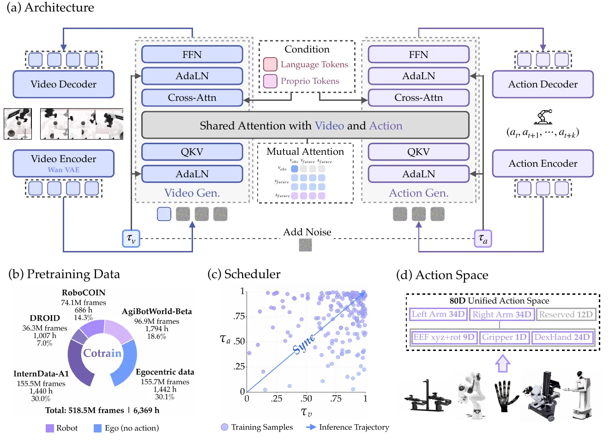
\(C(\mathcal E,\mathcal S,\mathcal M)\) 的具体选择：\(\mathcal E\) 是冻结的 Wan2.2-VAE；\(\mathcal S=\{\mathcal W,\mathcal A\}\)：预训练的 Wan2.2-TI2V-5B DiT 跑世界流，专用的 1B 参数 ActionDiT 跑动作流，两者联合自注意力；\(\mathcal M\) 是 Mutual 加视频内首帧因果。条件是当前观测 \(o_1\)（所有相机拼成一张画布）、指令 \(\ell\)、统一空间中的本体状态 \(q\in\mathbb R^{80}\)；联合去噪 \(T\) 帧窗口的未来帧 \(o_{2:T}\)（在隐空间）和连续动作块 \(a=a_{1:H}\in\mathbb R^{H\times80}\)。
分词和上下文。冻结的 Wan2.2-VAE 因果地编码：首帧单独一组，之后每 4 帧一组，得到 \(T'=1+(T-1)/4\) 个隐帧，第一个隐帧是“现在”的干净锚点。\((1,2,2)\) 的 patch 嵌入把隐视频摊成宽 3072 的世界流 token，带 (帧, 高, 宽) 三维 RoPE；\(H\) 个带噪动作步各线性嵌入成一个宽 1024 的动作流 token，带一维 RoPE。冻结的 umT5 把 \(\ell\) 编成 4096 维上下文，线性投影把 \(q\) 加成一个额外的上下文 token，两流各自用逐块交叉注意力读这个上下文。
桥接和预测。两个骨干的 30 对层全是桥接层：各流自己的投影把两种残差宽度映到共享注意力空间（24 头 × 128 维）。在 \(\mathcal M\) 下两流互相读，干净首帧那几行既不看带噪未来帧也不看动作。AdaLN 注入各流自己的时间步——\(t_v\) 按 token 注入，首帧 token 固定为 \(t_v=1\)；\(t_a\) 注入动作流。线性头把最终状态解码成速度。
按代码 separate_action_dit.py 和 LIBERO 检查点配置（dim 1024，ffn 4096，30 层，注意力空间 24 × 128 = 3072）：每块自注意力 q、k、v 各 1024→3072、o 3072→1024，加 q/k 的 RMSNorm，共 12,599,296；上下文交叉注意力同样大小；FFN 1024→4096→1024 共 8,393,728；LayerNorm 和 6×1024 调制再加 8,192。每块 33,600,512，30 块 1,008,015,360。再加动作编码/解码、文本投影、时间嵌入和调制共 13,020,240，总计 1,021,035,600 ≈ 1.02B，和论文的“1B”一致。不含本体编码器。
按 §4.3 一次性端到端联合训练。视频 DiT（从 Wan2.2-TI2V-5B 初始化）、ActionDiT、本体编码器都更新；只冻结 umT5 和 Wan2.2-VAE。不同形态在 80 维统一空间相遇，式 (2) 的 \(m\) 把动作监督限制在有值的坐标，窗口开头的机器人状态提供本体 token。式 (2) 取 \(\lambda_v=\lambda_a=1\)，\(w(\cdot)\) 是在中间噪声处达到峰值的钟形权重。两流时间步独立抽：
\(f_\rho\) 就是式 (3) 的扭曲函数，两流相同，\(\rho=5\) 让采样偏向高噪声。
同步去噪。两流沿对角线同步前进，在训练的扭曲上实现为 \(t_i=1-f_\rho(1-i/N)\)，\(\rho=5\)，\(N=10\) 步。从高斯噪声开始，第一个隐帧钳成当前观测的编码，每步之后重新钉住；每步一次联合前向加式 (3) 下方的耦合 Euler 更新，30 个桥接层上动作块和越来越干净的世界特征互相修正。完成的块经式 (4) 的逆映射回到各机器人的原生动作空间。
把 \(f_5(s)=5s/(1+4s)\) 代入 \(t_i=1-f_5(1-i/10)\)，\(i=0\ldots10\)：0、0.022、0.048、0.079、0.118、0.167、0.231、0.318、0.444、0.643、1。前一半步数都花在 \(t<0.17\) 的高噪声段，最后一步从 0.643 直接跳到 1。代码 action_backbone/scheduler.py 第 63 行是同一个式子（shift*s/(1+(shift-1)*s)，shift = 5）。
推理模式。所有基准评测（仿真和真机）都用同步推理：缓冲区空了才暂停，用当前观测预测新块，然后原样执行整块。加速。编译 + CUDA graph、相邻步复用稳定的速度、提示词缓存、控制路径上不做 VAE 解码。RTX 5090 上每块约 170 ms。
5 个来源、3 类数据：第一视角人类、真实机器人、合成机器人。原始 13.3 亿帧（约 14,300 小时），清洗和按来源抽样后 5.18 亿帧（约 6,400 小时）。
表 4 · OpenWAM-α 预训练数据（照录原文；“覆盖”一栏的勾选略去，见原文）
| 来源 | 类型 | 形态数 | FPS | 原始帧 (M) | 原始小时 | 使用帧 (M) | 使用小时 | 占比 % |
|---|---|---|---|---|---|---|---|---|
| 第一视角（自建） | 人类视频 | 1 | 30 | 744.9 | 6,897 | 155.7 | 1,442 | 30.1 |
| AgiBotWorld-Beta | 真机 | 1 | 15 | 124.5 | 2,306 | 96.9 | 1,794 | 18.6 |
| RoboCOIN | 真机 | 15 | 30 | 104.5 | 956 | 74.1 | 686 | 14.3 |
| DROID | 真机 | 1 | 10 | 46.3 | 1,285 | 36.3 | 1,007 | 7.0 |
| InternData-A1 | 仿真 | 4 | 30 | 313.7 | 2,904 | 155.5 | 1,440 | 30.0 |
| 合计 | 21 机器人 + 人类 | 1,333.9 | 14,348 | 518.5 | 6,369 | 100.0 |
各列求和：原始帧 744.9 + 124.5 + 104.5 + 46.3 + 313.7 = 1,333.9；原始小时 14,348；使用帧 518.5；使用小时 6,369；占比 100.0。帧数 ÷ FPS 换算小时：第一视角 155.7M / 30 / 3600 = 1,441.7，AgiBot 96.9M / 15 = 1,794.4，RoboCOIN 686.1，DROID 36.3M / 10 = 1,008.3，InternData 1,439.8，和表里的小时数一致到 1 小时。形态数 1 + 15 + 1 + 4 = 21 个机器人；文中“17 个物理平台”是三个真机来源 1 + 15 + 1。“第一视角和合成各占 30%、剩下 40% 按真机有效帧数分”也成立：18.6 + 14.3 + 7.0 = 39.9。
组成。第一视角数据是作者为“以操作为中心的世界建模”自建的：71.6K 段 0.25 到 6 分钟的第一人称录像，覆盖 3,006 种日常操作任务；没有机器人动作，动作和本体通道全部掩掉，只监督世界流。真机数据（AgiBotWorld-Beta、RoboCOIN、DROID）用 17 个平台的可执行轨迹给动作流打底；合成数据（InternData-A1）扩大单臂和双臂技能及环境变化的覆盖。
预算和采样。按来源设小时预算，预算从帧数目标推出（见读者注 10）。来源内部把小时预算“注水”分配到各子数据集，固定种子整回合抽样直到够数。训练时按实际样本数比例采样，每个保留的样本每轮恰好访问一次。
参考 Qwen-RobotManip 的清洗流程，补上针对所见故障的规则，分两层：
从同一个 α 基座出发，在 8 个仿真基准上分别监督微调并评测，5 类形态：单臂（LIBERO、LIBERO-Plus、VLABench）、双臂（RoboTwin2.0、RoboDojo）、移动单臂（RoboCasa365）、移动双臂（EBench）、灵巧手（RoboCasa-GR1）。RoboTwin2.0 有两个版本：Full（干净 + 随机数据，测域内）和 Clean2Random（只用干净数据，测域外）。
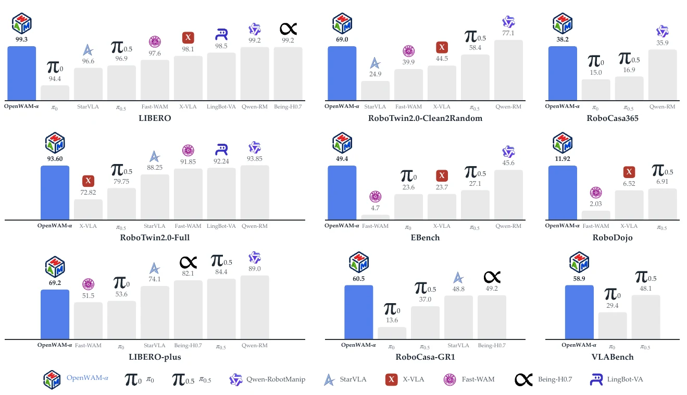
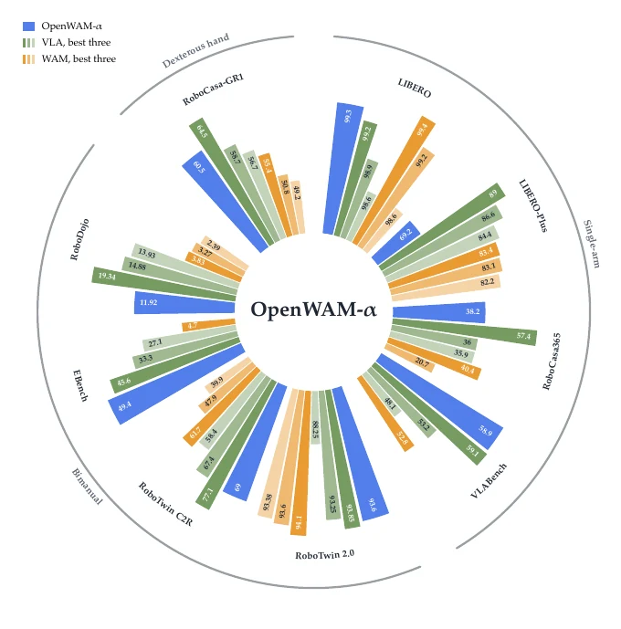
表 5 · LIBERO-Plus（照录原文）
| 方法 | Camera | Robot | Language | Light | Background | Noise | Layout | Avg |
|---|---|---|---|---|---|---|---|---|
| VLA | ||||||||
| π0 | 13.8 | 6.0 | 58.8 | 85.0 | 81.4 | 79.0 | 68.9 | 53.6 |
| OpenVLA-OFT | 56.4 | 31.9 | 79.5 | 88.7 | 93.3 | 75.8 | 74.2 | 69.6 |
| StarVLA | 52.5 | 49.8 | 88.5 | 95.7 | 95.7 | 73.0 | 76.9 | 74.1 |
| ABot-M0 | 60.4 | 67.9 | 86.4 | 96.2 | 91.6 | 86.4 | 82.6 | 80.5 |
| π0.5 | 78.4 | 73.6 | 80.8 | 96.2 | 94.1 | 89.0 | 84.5 | 84.4 |
| ACoT-VLA | 72.6 | 82.6 | 87.5 | 97.7 | 96.5 | 87.8 | 88.1 | 86.6 |
| Qwen-RobotManip | 87.2 | 75.5 | 85.6 | 96.6 | 97.7 | 97.7 | 87.3 | 89.0 |
| WAM | ||||||||
| Fast-WAM | 16.4 | 44.5 | 68.9 | 78.2 | 53.7 | 37.7 | 60.7 | 51.5 |
| Being-H0.7 | 82.0 | 59.0 | 82.8 | 97.8 | 90.0 | 93.5 | 88.5 | 82.1 |
| Cosmos-Policy | 75.8 | 63.3 | 81.7 | 96.5 | 88.9 | 92.7 | 82.2 | 82.2 |
| ImageWAM | 80.8 | 50.3 | 91.4 | 98.1 | 85.5 | 93.8 | 80.5 | 83.1 |
| ABot-M0.5 | 70.5 | 87.4 | 88.6 | 94.0 | 89.7 | 75.5 | 85.2 | 83.4 |
| OpenWAM-α | 33.8 | 76.1 | 88.0 | 97.0 | 87.1 | 39.8 | 77.5 | 69.2 |
意外的例外是 LIBERO-Plus。损失集中在 Camera 和 Noise 两种扰动，Background 和 Layout 也有缺口。而同一榜单上 ABot-M0.5、ImageWAM、Being-H0.7 这些 WAM 都接近最好。作者从两个角度找原因：
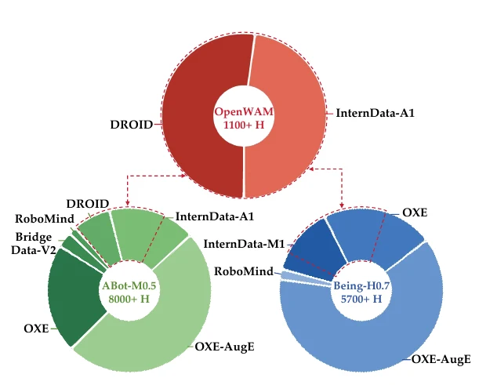
要点 1：具身模型在一个基准上泛化得多好，最终取决于预训练数据里有没有接近该基准测试条件（形态和环境）的数据。大规模、多样、场景丰富的机器人操作数据仍是决定性因素。
要点 2：靠大规模数据，在像素隐空间预测未来的 WAM 可以表现很好，但对视觉扰动的鲁棒性有天生的上限。仍然需要对环境变化鲁棒、信息丰富、足够紧凑的表示。
表 5 的 Avg 不等于 7 列的算术平均：OpenWAM-α 七列平均 71.33，表里 69.2；π0 是 56.13 对 53.6；Fast-WAM 51.44 对 51.5。表 17（RoboDojo）OpenWAM-α 六类 SR 的平均 12.41，表里 11.92；表 19（RoboCasa365）三列平均 36.9，表里 38.2。所以这些 Avg 应该是按每类试验数加权的（LIBERO-Plus 各扰动类的试验数本来就不同）。论文没说明权重，我也没核对各基准官方的计算方式，标“未核实”。看这几张表时不要用列平均去复算 Avg。
总体上两组没有实质差距，各有模型登顶（WAM 里 ABot-M0.5 和 α，VLA 里 Xiaomi-Robotics-1 和 Qwen-RobotManip）。但细看有一致的规律：
图 16 · 两种范式的域内和域外对比（图上标注的数字，“#1–#3”是各分项最强的三个 VLA）· 看原图 ↗
| 对比 | 分项 | WAM 一方 | VLA 一方 |
|---|---|---|---|
| (a) Fast-WAM vs. StarVLA（都不做具身预训练） | LIBERO 平均（ID） | 97.6 | 96.6 |
| RoboTwin2.0 C2R Clean（ID） | 77.8 | 46.5 | |
| RoboTwin2.0 Full 平均（ID） | 91.85 | 88.25 | |
| LIBERO-Plus 平均（OOD） | 51.5 | 74.1 | |
| RoboTwin2.0 C2R Randomized（OOD） | 1.9 | 3.2 | |
| (b) α vs. VLA 前三（ID） | LIBERO 平均 | 99.3 | 99.2 / 98.9 / 98.6 |
| VLABench In-dist. SR | 83.4 | 75.6 / 69.7 / 65.4 | |
| RoboTwin2.0 C2R Clean | 89.4 | 84.7 / 77.2 / 70.7 | |
| RoboDojo Gen-Std SR | 25.56 | 28.00 / 20.00 / 18.00 | |
| (c) α vs. VLA 前三（OOD） | LIBERO-Plus 平均 | 69.2 | 89.0 / 86.6 / 84.4 |
| RoboTwin2.0 C2R Randomized | 48.7 | 69.4 / 67.9 / 46.0 | |
| RoboDojo Open SR | 1.08 | 3.58 / 2.08 / 1.67 |
域内 WAM 拟合得更好。VLA 只有动作监督，WAM 多了视频隐变量这一项监督，给参数优化注入额外信息。域外 VLA 泛化得更好。这是同一机制的另一面：长视野未来预测帮助拟合，但分布变了以后同样意味着更重的误差累积，而只预测动作的 VLA 没有这个负担。两种缺口都能靠数据弥补：覆盖复杂环境变化、动作标注精确的预训练数据。怎样结合两种范式的长处值得研究。
要点 3：没有哪种范式全面胜出：视频隐变量监督让 WAM 域内拟合占优，VLA 域外泛化更好，两种缺口都可以靠足够大且多样的预训练数据补上。结合两种端到端范式的长处是推进能力边界的方向。
图 16 的每个数我都在附录 D 的表里找到了：(a) 对应表 13、15、16、5；(b) LIBERO 前三 VLA 是 Qwen-RobotManip 99.2、Being-H0.5 98.9、ABot-M0 98.6（表 13），VLABench 是 Xiaomi-Robotics-1 75.6、ERVLA 69.7、π0.5 65.4（表 14），RoboDojo Gen-Std 是 Xiaomi-Robotics-1 28.00、Galaxea G0.5 20.00、DM0.5 18.00（表 17）；(c) C2R Randomized 是 Qwen-RobotManip 69.4、GigaBrain-0.7 67.9、π0.5 46.0（表 15）。(a) 的 WAM 域内优势只有一对模型、三个分项，LIBERO 上只差 1.0 点（约 20 个回合）。
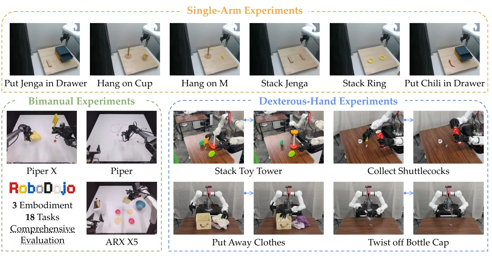
三种形态：单臂（Franka-Research-3，叠放、抓放、悬挂，指标 SR）；双臂（RoboDojo 官方真机平台，ARX X5、Piper、Piper X，按 RoboDojo 的分类覆盖泛化、精度、长时程、记忆、开放任务，指标 SR 和进度分）；灵巧手（Wuji 手 + Tianji 臂，预训练里没有的形态和动作空间，指标 SR 和进度分）。
表 6 · 单臂真机（照录原文）
| 方法 | 叠积木 | 叠圆环 | 辣椒进抽屉 | 积木进抽屉 | 挂 M | 挂杯子 | 平均 |
|---|---|---|---|---|---|---|---|
| π0.5 | 13/20 (65%) | 7/20 (35%) | 14/20 (70%) | 15/20 (75%) | 7/20 (35%) | 10/20 (50%) | 66/120 (55.0%) |
| LingBot-VA | 16/20 (80%) | 15/20 (75%) | 17/20 (85%) | 17/20 (85%) | 13/20 (65%) | 15/20 (75%) | 93/120 (77.5%) |
| OpenWAM-α | 17/20 (85%) | 12/20 (60%) | 20/20 (100%) | 20/20 (100%) | 13/20 (65%) | 17/20 (85%) | 99/120 (82.5%) |
| 策略 | 平台 | 任务 1 | 任务 2 | 任务 3 | 任务 4 | 任务 5 | 任务 6 | 平台平均 | 总平均 |
|---|---|---|---|---|---|---|---|---|---|
| X-VLA | ARX X5 | 0.0/0.0 | 0.0/0.0 | 0.0/0.0 | 2.0/0.0 | 20.7/10.0 | 18.0/0.0 | 6.8/1.7 | 7.6/3.3 |
| Piper | 0.0/0.0 | 5.3/0.0 | 0.0/0.0 | 0.0/0.0 | 53.0/50.0 | 37.0/0.0 | 15.9/8.3 | ||
| Piper X | 0.0/0.0 | 0.0/0.0 | 0.0/0.0 | 0.0/0.0 | 0.0/0.0 | 0.7/0.0 | 0.1/0.0 | ||
| Xiaomi-Robotics-0 | ARX X5 | 24.0/20.0 | 0.0/0.0 | 3.0/0.0 | 4.0/0.0 | 40.0/20.0 | 19.0/10.0 | 15.0/8.3 | 7.9/3.9 |
| Piper | 0.0/0.0 | 0.0/0.0 | 0.0/0.0 | 0.0/0.0 | 23.0/20.0 | 22.7/0.0 | 7.6/3.3 | ||
| Piper X | 0.0/0.0 | 0.7/0.0 | 4.0/0.0 | 0.0/0.0 | 0.0/0.0 | 2.7/0.0 | 1.2/0.0 | ||
| GalaxeaVLA (G0) | ARX X5 | 1.0/0.0 | 0.0/0.0 | 3.0/0.0 | 6.0/0.0 | 0.0/0.0 | 10.3/0.0 | 3.4/0.0 | 9.0/4.4 |
| Piper | 0.0/0.0 | 32.7/10.0 | 13.3/10.0 | 0.0/0.0 | 56.0/50.0 | 30.0/10.0 | 22.0/13.3 | ||
| Piper X | 0.0/0.0 | 0.0/0.0 | 0.0/0.0 | 4.0/0.0 | 0.0/0.0 | 6.0/0.0 | 1.7/0.0 | ||
| InternVLA-A1 | ARX X5 | 0.0/0.0 | 0.0/0.0 | 0.0/0.0 | 0.0/0.0 | 48.0/20.0 | 12.0/0.0 | 10.0/3.3 | 12.0/7.2 |
| Piper | 0.0/0.0 | 7.3/0.0 | 0.0/0.0 | 0.0/0.0 | 73.0/70.0 | 59.0/40.0 | 23.2/18.3 | ||
| Piper X | 0.0/0.0 | 0.0/0.0 | 4.0/0.0 | 2.0/0.0 | 0.0/0.0 | 10.0/0.0 | 2.7/0.0 | ||
| π0.5 | ARX X5 | 24.6/20.0 | 1.8/0.0 | 25.8/10.0 | 47.0/20.0 | 40.0/20.0 | 26.8/10.0 | 27.7/13.3 | 22.9/12.8 |
| Piper | 10.0/10.0 | 28.0/0.0 | 10.0/10.0 | 0.0/0.0 | 72.0/60.0 | 72.0/50.0 | 32.0/21.7 | ||
| Piper X | 0.0/0.0 | 14.8/10.0 | 0.0/0.0 | 29.5/10.0 | 7.5/0.0 | 3.0/0.0 | 9.1/3.3 | ||
| OpenWAM-α | ARX X5 | 31.0/0.0 | 0.0/0.0 | 13.0/0.0 | 52.0/20.0 | 100.0/100.0 | 38.0/20.0 | 39.0/23.3 | 37.6/24.4 |
| Piper | 8.3/0.0 | 60.0/40.0 | 36.7/30.0 | 0.0/0.0 | 100.0/100.0 | 75.0/50.0 | 46.7/36.7 | ||
| Piper X | 0.0/0.0 | 28.0/10.0 | 18.0/0.0 | 52.3/20.0 | 40.0/40.0 | 24.7/10.0 | 27.2/13.3 |
任务顺序。ARX X5：cover_blocks、make_bread、make_food、pack_and_pour_fruit、store_in_safe、insert_tubes。Piper：stack_and_cover_blocks、fill_pen_holder、put_objects_into_basket、insert_charger、stack_bowls、stand_up_bottles。Piper X：classify_objects、disassemble_LEGO、hang_mugs、pack_objects_into_backpack、sweep_blocks、cap_pen。
表 8 · 灵巧手真机，Score（完成元素/总元素）/ SR（照录原文）
| 任务 | 条件 | π0.5 | OpenWAM-α |
|---|---|---|---|
| 叠玩具塔 | ID | 16/30 (53.3) / 1/10 (10%) | 21/30 (70.0) / 4/10 (40%) |
| OOD | 12/30 (40.0) / 1/10 (10%) | 17/30 (56.7) / 3/10 (30%) | |
| 收羽毛球 | ID | 11/35 (31.4) / 2/10 (20%) | 29/35 (82.9) / 6/10 (60%) |
| OOD | 17/54 (31.5) / 3/15 (20%) | 30/57 (52.6) / 4/15 (26.7%) | |
| 收衣服 | ID | 26/30 (86.7) / 6/10 (60%) | 30/30 (100.0) / 10/10 (100%) |
| OOD | 45/60 (75.0) / 9/20 (45%) | 55/60 (91.7) / 17/20 (85%) | |
| 拧瓶盖 | ID | 8/10 (80.0) / 3/10 (30%) | 10/10 (100.0) / 7/10 (70%) |
| OOD | 13/20 (65.0) / 6/20 (30%) | 18/20 (90.0) / 16/20 (80%) |
单臂上 α 在多数任务领先 LingBot-VA（代表 WAM）和 π0.5（代表 VLA），平均最好。RoboDojo 真机赛道上 α 总分第一，三个平台都稳定。灵巧手平台和它的动作空间（9 维末端位姿 + 21 个手指自由度）都不在预训练里，α 在所有任务和条件下都明显超过 π0.5。
OpenWAM 把世界-动作建模从一组紧耦合的实现选择变成可控的实验程序：Infra 把设计空间拆成模块和三族结构，一个训练器、一个策略服务器、一套覆盖 8 个仿真基准和真机的评测协议；Study 回答继承、协同、跨域三个问题并提炼成配方；α 在第一视角和机器人数据上按配方大规模训练，在仿真和单臂、双臂、灵巧手真机上都表现强。全部开放，α 作为后续研究的强基线。作者认为最有前景的方向是：更大、更多样、动作标注精确的具身数据；既紧凑又对环境变化鲁棒的视觉表示；结合 WAM 和 VLA 长处的端到端设计。
16 台机器，每台 8 张 H200（共 128 张），约 7 天。每卡 24 个片段，不做梯度累积，全局 batch 3,072。
表 9 · OpenWAM-α 预训练配置（照录原文）
| 配置 | 值 |
|---|---|
| 算力 | 16 节点（128 张 NVIDIA H200） |
| 训练时间 | ≈ 7 天 |
| 优化器 | AdamW |
| Batch | 3,072（每卡 24） |
| 学习率 | 1 × 10⁻⁴ |
| 学习率调度 | Cosine；5% warmup；最低比例 0.01 |
| Weight decay | 0.01 |
| 动量 | β1, β2 = 0.9, 0.95 |
| 训练步数 | 155,862（1 个 epoch） |
| 梯度裁剪 | 全局范数 1.0 |
| 精度 | bfloat16 |
| 分布式 | DeepSpeed ZeRO Stage 2 |
| 输入片段 | 33 帧；video stride 4；window stride 1 |
| 分辨率 | 384 × 320 |
| 多视角输入 | 开启 |
| 图像增强 | ColorJitter(0.2, 0.2, 0.2, 0.0) |
| Flow shift | 视频/动作 5.0/5.0 |
| 损失权重 | λv = 1.0，λa = 1.0 |
| 统一控制空间 | 80 维动作；80 维本体状态 |
155,862 步 × 3,072 = 478,808,064 个样本，而表 4 说训练用 5.185 亿帧，且“每个保留的样本每轮恰好访问一次”。代码里大多数读取器让每一帧都起一个窗口（lerobot_v3_reader.py 第 483-490 行，最短窗口 1 或 2 帧），所以样本数应接近帧数。差 3,969 万（7.7%）。可能是 AgiBot 按分段标注取样、空闲裁剪后的帧不计入等原因，我没有找到确切解释，标“未核实”。顺带：7 天 ÷ 155,862 步 ≈ 3.9 秒/步。
Hugging Face 上 OpenWAM/OpenWAM-Alpha-Pretrain-Foundation-Model（2026-09-04 创建，最后修改 2026-09-09，revision 52df4e6）只有一个权重文件 checkpoint_step_154000.safetensors，其 config.yaml 写的是 num_epochs: 1、batch_size: 24、save_steps: 2000、keep_last_k_ckpts: 1，和表 9 一致。155,862 = 77 × 2,000 + 1,862，所以 154,000 正是最后一次周期保存。但当前代码在训练结束时还会再存一次最终权重（openwam_trainer.py 第 686-697 行），如果跑满一个 epoch 应该有 step_155862。可能的解释：训练没有跑满，或者当时的代码还没有“结束时保存”。论文、README、模型卡都没有提 154,000 这个数。差 1,862 步约占全程 1.2%。按代码的调度器（training_utils.py 第 59-85 行：warmup 7,793 步，之后余弦退火 148,069 步到 1e-6），第 154,000 步的学习率是 1.04 × 10⁻⁶，已经是最低值的 1.04 倍，所以我推测剩下的步数影响很小，但没法验证。用户手上的“step 154000”和公布文件一致，和论文表 9 不一致。
所有下游模型都从同一个 α 预训练检查点初始化。SFT 沿用表 9 的配置，只改三项：全局 batch、训练轮数或步数、是否做图像增强。LIBERO-Plus 直接用 LIBERO 的检查点评测，不再微调。
表 10 · 各基准的 SFT 配置（照录原文；“–”表示不做增强）
| 基准 | Batch | 训练轮数 / 步数 | 增强 |
|---|---|---|---|
| 仿真 | |||
| LIBERO | 256 | 10 epochs（10,690 步） | – |
| VLABench | 196 | 6k 步 | ColorJitter |
| RoboTwin2.0-Full | 256 | 5 epochs（118,655 步） | – |
| RoboTwin2.0-Clean2Random | 256 | 5 epochs（10,740 步） | ColorJitter |
| RoboDojo | 256 | 60k 步 | ColorJitter |
| RoboCasa365 | 1,024 | 60k 步 | ColorJitter |
| EBench | 256 | 100k 步 | ColorJitter |
| RoboCasa-GR1 | 256 | 100k 步 | ColorJitter |
| 真机 | |||
| 单臂（Franka-Research-3） | 256 | 10 epochs（9,860 步） | – |
| 双臂（RoboDojo 真机赛道） | 256 | 30k 步 | ColorJitter |
| 灵巧手（Wuji + Tianji） | 256 | 5 epochs（10,925 步） | – |
OpenWAM 发布的 LIBERO 数据 OpenWAM/LIBERO（由 lerobot/libero 转换）的 meta/info.json：1,693 条轨迹、273,465 帧、40 个任务、10 fps。LIBERO 读取器的最短训练窗口是 1 帧，所以每帧起一个窗口，一轮 273,465 个样本。训练器的步数是 \(\lceil\lceil 273465/b\rceil/n\rceil\)（openwam_trainer.py 第 224-230 行，\(b\) 每卡 batch，\(n\) 进程数）。HF 检查点配置 batch_size: 4，要全局 256 就是 64 个进程：\(\lceil\lceil273465/4\rceil/64\rceil=\lceil 68367/64\rceil=1069\)，10 轮 10,690 步。和表 10、和 HF 文件名 checkpoint_step_10690.safetensors 完全一致。其他组合只要全局 256 也都是 1069 步/轮。
Franka-Research-3 + Robotiq 平行夹爪 + Intel RealSense 相机，六个桌面任务，每个用自然语言指令描述（表 11）：左边的黄圆环叠到另一个圆环上；左边的积木叠到另一块积木上；杯子挂到架子上；M 形件挂到架子上；辣椒放进抽屉再推上抽屉；积木放进抽屉再推上抽屉。图 18 是工作台照片，图 19 是每个任务从一次执行视频里均匀取的 6 帧（看原图 ↗，↗）。
协议。每个任务用 100 条真机演示微调，然后独立试 20 次，报告成功次数。叠放：左边物体被拿起并稳定叠在目标上；悬挂：物体被拿起并挂住；抽屉：物体在抽屉里且上层抽屉被推上。
四个任务（表 12）：按从大到小把圆盘套上塔杆；把所有羽毛球放进球筒；拧开瓶盖；把桌上一堆衣服放进篮子。图 20 是平台、工作区、观测相机和物体的照片，图 21 是每个任务的执行阶段和 ID/OOD 场景（物体、布局、光照、背景各改一项）（看原图 ↗，↗）。
两个指标：最终成功率和进度分。
\(n_i\) 是第 \(i\) 次完成的元素数，\(m_i\) 是该次的元素总数。原文把进度分记作 \(S_{\rm process}\)，正文叫 progress score。各任务：收羽毛球每次 2 到 4 个，全部进筒才算成功；叠塔每次 3 个圆盘，按大小顺序全部套上才算；收衣服每次 3 到 4 件；拧瓶盖要完全拧下且稳定抓住瓶子或瓶盖，进度分只看是否拧下。
RoboDojo-Real 全部 18 个任务，用 RoboDojo 团队提供的官方真机评测平台，三个平台 ARX X5、Piper、Piper X，严格按官方统一协议（官方任务文档）。
图 13 背后的完整表（LIBERO-Plus 已在表 5）。下面先列 LIBERO 全表，其余折叠。
表 13 · LIBERO 成功率 %（照录原文）
| 方法 | Spatial | Object | Goal | Long | Avg |
|---|---|---|---|---|---|
| VLA | |||||
| OpenVLA | 84.7 | 88.4 | 79.2 | 53.7 | 76.5 |
| π0 | 98.0 | 96.8 | 94.4 | 88.4 | 94.4 |
| StarVLA | 97.8 | 98.6 | 96.2 | 93.8 | 96.6 |
| π0.5 | 98.8 | 98.2 | 98.0 | 92.4 | 96.9 |
| GR00T-N1.6 | 97.7 | 98.5 | 97.5 | 94.4 | 97.0 |
| OpenVLA-OFT | 97.6 | 98.4 | 97.9 | 94.5 | 97.1 |
| X-VLA | 98.2 | 98.6 | 97.8 | 97.6 | 98.1 |
| ABot-M0 | 98.8 | 99.8 | 99.0 | 96.6 | 98.6 |
| Being-H0.5 | 99.2 | 99.6 | 99.4 | 97.4 | 98.9 |
| Qwen-RobotManip | – | – | – | – | 99.2 |
| WAM | |||||
| Fast-WAM | 98.2 | 100.0 | 97.0 | 95.2 | 97.6 |
| Motus | 96.8 | 99.8 | 96.6 | 97.6 | 97.7 |
| ImageWAM | 97.2 | 99.2 | 98.8 | 98.4 | 98.4 |
| LingBot-VA | 98.5 | 99.6 | 97.2 | 98.5 | 98.5 |
| DiT4DiT | – | – | – | – | 98.6 |
| Being-H0.7 | – | – | – | – | 99.2 |
| ABot-M0.5 | 100.0 | 99.8 | 99.4 | 98.4 | 99.4 |
| OpenWAM-α | 99.6 | 99.6 | 99.8 | 98.2 | 99.3 |
| 方法 | In-dist. | Category | Commonsense | Instruction | Texture | Avg | ||||||||||||
|---|---|---|---|---|---|---|---|---|---|---|---|---|---|---|---|---|---|---|
| SR | PS | IS | SR | PS | IS | SR | PS | IS | SR | PS | IS | SR | PS | IS | SR | PS | IS | |
| π0 | 47.0 | 62.7 | 67.8 | 21.2 | 33.6 | 44.0 | 29.1 | 43.0 | 54.9 | 17.3 | 38.7 | 58.0 | 32.2 | 42.5 | 50.6 | 29.4 | 44.1 | 55.0 |
| LoHo-Manip | 54.0 | – | – | 23.0 | – | – | 36.0 | – | – | 42.0 | – | – | 39.0 | – | – | 39.0 | – | – |
| ACoT-VLA | – | 66.1 | 79.8 | – | 38.9 | 54.1 | – | 37.8 | 52.3 | – | 39.6 | 56.8 | – | 54.6 | 74.6 | – | 47.4 | 63.5 |
| π0.5 | 65.4 | 77.8 | 80.4 | 38.2 | 49.7 | 52.0 | 43.9 | 57.3 | 60.0 | 48.2 | 64.2 | 67.0 | 44.9 | 62.3 | 65.0 | 48.1 | 62.3 | 64.9 |
| ERVLA | 69.7 | 81.1 | 84.2 | 47.0 | 61.0 | 66.4 | 44.0 | 55.0 | 57.2 | 58.0 | 70.2 | 73.8 | 47.4 | 62.3 | 70.6 | 53.2 | 65.9 | 70.4 |
| Xiaomi-Robotics-1 | 75.6 | 85.0 | 79.8 | 53.0 | 66.6 | 66.4 | 48.4 | 58.3 | 58.2 | 55.8 | 66.8 | 70.2 | 62.6 | 74.9 | 74.8 | 59.1 | 70.3 | 69.9 |
| Bridge-WA（WAM） | 78.0 | 85.8 | 85.0 | 23.0 | 28.8 | 39.0 | 51.1 | 64.4 | 74.2 | 67.0 | 80.3 | 82.0 | 45.0 | 60.3 | 76.0 | 52.8 | 64.0 | 71.2 |
| OpenWAM-α | 83.4 | 87.9 | 75.2 | 38.1 | 45.9 | 45.9 | 58.0 | 64.8 | 57.9 | 53.8 | 64.5 | 66.5 | 61.4 | 72.9 | 71.6 | 58.9 | 67.2 | 63.5 |
π0、ACoT-VLA、π0.5、ERVLA 几行在 PDF 文本层里列位错开，我按列数重新对齐，可能有一两格错位，对照原文第 40 页使用。
| 表 15 · Clean2Random | Clean | Randomized | Avg |
|---|---|---|---|
| StarVLA | 46.5 | 3.2 | 24.9 |
| GR00T-N1.7 | 43.6 | 20.7 | 32.2 |
| X-VLA | 68.0 | 20.9 | 44.5 |
| Spatial Forcing | 77.2 | 26.7 | 52.0 |
| ABot-M0 | 70.7 | 36.0 | 53.4 |
| π0.5 | 70.7 | 46.0 | 58.4 |
| GigaBrain-0.7 | 66.8 | 67.9 | 67.4 |
| Qwen-RobotManip | 84.7 | 69.4 | 77.1 |
| AHA-WAM（WAM） | 64.3 | 3.2 | 33.8 |
| Fast-WAM（WAM） | 77.8 | 1.9 | 39.9 |
| X-WAM（WAM） | 70.0 | 25.8 | 47.9 |
| 4D-WAM（WAM） | 81.5 | 41.8 | 61.7 |
| OpenWAM-α | 89.4 | 48.7 | 69.0 |
| 表 16 · Full | Clean | Randomized | Avg |
|---|---|---|---|
| X-VLA | 72.80 | 72.84 | 72.82 |
| π0.5 | 82.70 | 76.80 | 79.75 |
| ABot-M0 | 86.06 | 85.08 | 85.57 |
| Qwen-VLA | 86.10 | 87.20 | 86.65 |
| StarVLA | 88.18 | 88.32 | 88.25 |
| Galaxea G0.5 | 93.70 | 92.80 | 93.25 |
| Qwen-RobotManip | 93.70 | 94.00 | 93.85 |
| Motus（WAM） | 88.66 | 87.02 | 87.84 |
| Fast-WAM（WAM） | 91.90 | 91.80 | 91.85 |
| LingBot-VA（WAM） | 92.93 | 91.55 | 92.24 |
| ImageWAM（WAM） | 93.20 | 93.56 | 93.38 |
| LingBot-VA 2.0（WAM） | 93.80 | 93.40 | 93.60 |
| ABot-M0.5（WAM） | 94.00 | 94.20 | 94.10 |
| OpenWAM-α | 93.74 | 93.46 | 93.60 |
| 方法 | Gen-Std | Gen-Rand | Precision | Long-Horizon | Memory | Open | Avg |
|---|---|---|---|---|---|---|---|
| StarVLA-α | 5.00 / 7.54 | 0.00 / 0.33 | 4.33 / 9.90 | 6.50 / 14.15 | 2.44 / 3.34 | 0.58 / 0.68 | 3.24 / 6.40 |
| X-VLA | 12.00 / 17.90 | 1.00 / 3.04 | 12.00 / 18.32 | 9.75 / 16.53 | 3.56 / 4.76 | 0.50 / 0.55 | 6.52 / 10.13 |
| π0.5 | 15.00 / 20.93 | 1.00 / 5.82 | 5.50 / 12.40 | 14.67 / 23.54 | 4.56 / 5.78 | 1.67 / 1.98 | 6.91 / 11.41 |
| Spatial Forcing | 15.00 / 21.25 | 4.00 / 6.98 | 10.58 / 17.33 | 14.58 / 23.26 | 4.11 / 5.43 | 1.58 / 1.78 | 8.04 / 12.38 |
| Hy-Embodied-0.5-VLA | 17.00 / 21.98 | 0.00 / 1.57 | 8.00 / 13.81 | 14.92 / 25.74 | 12.11 / 13.37 | 0.58 / 0.65 | 8.80 / 13.07 |
| Xiaomi-Robotics-1 | 28.00 / 35.65 | 6.00 / 11.44 | 18.83 / 26.69 | 23.67 / 38.39 | 6.56 / 7.81 | 3.58 / 3.94 | 13.93 / 20.07 |
| Galaxea G0.5 | 20.00 / 26.74 | 6.00 / 11.16 | 20.42 / 28.25 | 32.25 / 44.12 | 7.33 / 8.61 | 1.58 / 1.73 | 14.88 / 20.23 |
| DM0.5 | 18.00 / 23.49 | 4.00 / 8.06 | 16.75 / 24.82 | 19.50 / 33.70 | 47.44 / 47.74 | 2.08 / 2.43 | 19.34 / 24.90 |
| Fast-WAM（WAM） | 2.00 / 4.33 | 0.00 / 0.34 | 0.00 / 1.96 | 5.17 / 9.14 | 3.44 / 3.55 | 0.42 / 0.42 | 2.03 / 3.48 |
| AHA-WAM（WAM） | 6.00 / 10.32 | 0.00 / 1.26 | 2.42 / 5.86 | 2.67 / 8.61 | 2.78 / 2.97 | 0.83 / 0.88 | 2.39 / 4.82 |
| GigaWorld-Policy（WAM） | 6.00 / 10.28 | 0.00 / 0.41 | 1.83 / 6.15 | 8.92 / 15.51 | 2.22 / 3.46 | 0.50 / 0.54 | 3.27 / 6.20 |
| X-WAM（WAM） | 5.00 / 11.24 | 1.00 / 3.54 | 1.83 / 6.72 | 9.08 / 17.47 | 4.67 / 6.32 | 0.25 / 0.57 | 3.83 / 7.69 |
| OpenWAM-α | 25.56 / 33.16 | 4.11 / 8.26 | 9.25 / 18.45 | 25.33 / 34.93 | 9.11 / 10.41 | 1.08 / 1.41 | 11.92 / 17.18 |
| 表 18 · EBench | Table Top SR / Score | Simple PnP | Long Horizon | Overall |
|---|---|---|---|---|
| StarVLA-OFT | – | – | – | 0.0 / 0.2 |
| π0 | 15.7 / 30.0 | 35.0 / 39.0 | 17.0 / 41.0 | 23.6 / 37.0 |
| X-VLA | 8.6 / 24.0 | 50.0 / 54.0 | 6.2 / 25.0 | 23.7 / 36.0 |
| InternVLA-A1 | 4.3 / 11.0 | 43.0 / 47.0 | 17.9 / 46.0 | 23.9 / 36.0 |
| π0.5 | 12.9 / 32.0 | 45.0 / 50.0 | 18.1 / 39.0 | 27.1 / 41.0 |
| GigaBrain-0.7 | – | – | – | 33.3 / 46.0 |
| Qwen-RobotManip | 50.0 / 70.0 | 56.5 / 60.0 | 29.9 / 55.0 | 45.6 / 60.0 |
| Fast-WAM（WAM） | – | – | – | 4.7 / 7.6 |
| OpenWAM-α | 30.0 / 44.2 | 67.5 / 72.0 | 44.3 / 72.6 | 49.4 / 64.7 |
| 表 19 · RoboCasa365 | Atomic | Comp.-Seen | Comp.-Unseen | Avg |
|---|---|---|---|---|
| Diffusion Policy | 15.7 | 0.2 | 1.3 | 6.1 |
| π0 | 36.3 | 5.2 | 0.7 | 15.0 |
| π0.5 | 39.6 | 7.1 | 1.2 | 16.9 |
| GR00T-N1.5 | 50.7 | 14.8 | 2.7 | 23.9 |
| Qwen-RobotManip | 68.6 | 20.1 | 14.9 | 35.9 |
| RLDX-1 | 67.6 | 27.9 | 8.5 | 36.0 |
| Xiaomi-Robotics-1 | 80.2 | 57.1 | 32.1 | 57.4 |
| GigaWorld-Policy（WAM） | 44.4 | 11.8 | 2.9 | 20.7 |
| ABot-M0.5（WAM） | 75.9 | 38.3 | 2.7 | 40.4 |
| OpenWAM-α | 69.7 | 32.1 | 8.9 | 38.2 |
| 表 20 · RoboCasa-GR1 | SR % |
|---|---|
| π0 / π0.5 | 13.6 / 37.0 |
| GR00T-N1.5 / N1.6 | 48.0 / 49.9 |
| StarVLA | 48.8 |
| VP-VLA / Being-H0.5 | 53.8 / 53.9 |
| Qwen-VLA-Instruct / RLDX-1 | 56.7 / 58.7 |
| PhysBrain 1.0 | 64.5 |
| UWM / Being-H0.7（WAM） | 20.0 / 49.2 |
| DiT4DiT / LDA-1B（WAM） | 50.8 / 55.4 |
| OpenWAM-α | 60.5 |
仓库 1dcaeea（2026-11-12，Apache-2.0），比论文 v1 晚两个多月，期间合并了训练加速（PR #58，README 说 4 张 H200 上七个 SFT 基准提速 2.54 到 2.77 倍，那组测量关掉了梯度检查点）等改动。只读，没有运行。和论文对应的位置：
| 论文 | 代码 | 对照结果 |
|---|---|---|
| §3.1 六种结构 | openwam/model/architectures/{single,dual,tri}_system/；configs/model/*.yaml 的 architecture.variant | 一致；联合交叉注意力的截断由 detach_bridge 控制 |
| 式 (1) 四种掩码 | attention_mask_mode（mutual 等），video_attention_mask_mode: first_frame_causal | 一致 |
| §5.1.1 ActionDiT | action_backbone/separate_action_dit.py：dim 1024，ffn 4096，层数和头数随视频骨干自动取（30 层，24 × 128） | 参数 1.021B，见读者注 8 |
| Wan2.2-VAE 的压缩 | wan/models/vae.py WanVideoVAE38：z_dim 48，upsampling_factor = 16 | 384 × 320 → 24 × 20 隐格；再 (1,2,2) patch → 每隐帧 12 × 10 = 120 个 token（我的推算） |
| 式 (3) 和 \(\rho=5\) | action_backbone/scheduler.py 第 63 行；检查点 shift_video: 5.0、shift_action: 5.0 | 一致 |
| §5.1.3 N = 10、同步、加速 | configs/deploy.yaml：denoise_steps: 10，denoise_mode: sync，inference_mode: sync，inference_horizon: null（整块执行），dit_cache 开（余弦 0.99，最多连跳 3 次），compile 开，decode_video: false | 一致 |
| §3.2 自包含检查点 | HF 检查点目录：config.yaml、权重、umT5 分词器、normalization_stats.npy（基座没有这个文件） | 一致；LIBERO 客户端要求目录里有 config.yaml 和 normalization_stats.npy |
| 表 9 预训练 | HF 基座 config.yaml：五个来源，weight_strategy: proportional，lr 1e-4、cosine、warmup 0.05、min 0.01、batch 24、1 epoch | 一致，但权重是第 154,000 步（读者注 15）；配置里第一视角 total_hours 是 1,439.03，和 InternData-A1 完全相同，表 4 是 1,442（读者注 17） |
| 表 10 LIBERO | HF OpenWAM-Alpha-Sim-LIBERO/config.yaml | 见下一节 |
| §3.4 评测客户端 | benchmarks/libero/ | 论文没写 LIBERO 的评测协议，代码里写死了（读者注 19） |
HF 基座配置里各来源的 total_hours：AgiBot 1,793.80、RoboCOIN 686.12、DROID 1,007.05、InternData-A1 1,439.03，和表 4 一致到 1 小时；但第一视角（配置里叫 worldengine）也写 1,439.03，和 InternData-A1 一字不差，表 4 是 1,442。像是复制时没改。另外预训练时机器人来源用 normalize_mode: quantile，而 LIBERO 等下游微调用 min-max（openwam-alpha-finetuning.md 说 α 的微调固定 min-max）。两者是不同数据集各自的统计，不矛盾，但复现时别把预训练的归一化方式套到下游。
（LIBERO 本身是什么、各家评测协议有什么不同，见读者问答 问 1。）
你复现的是“OpenWAM-α 从官方预训练基座在 LIBERO 上微调”。这一节把论文、README、代码和 Hugging Face 上和 LIBERO 有关的设置逐项列出。先说结论：
benchmarks/libero/README.md 的“4. Results”表（标明“Scores from the OpenWAM paper”），四个数相同。仓库首页 README 没有这张表（读者注 18）。num_frames: 33（块长 = num_frames − 1 = 32），不是来自 video_stride。video_stride: 4 只对视频抽帧：33 帧里取第 0、4、…、32 帧共 9 帧，正好对上 Wan2.2-VAE 的 4 倍时间压缩，编码后 1 + 8/4 = 3 个隐帧。README 的原话是“num_frames=33 and video_stride=4 … produce the 32-step action horizon”，两者合起来才构成约定（configs/dataloader/libero.yaml 注释写得更清楚：action horizon = num_frames − 1，video_stride 只影响视频）。LIBERO 微调和评测设置（“HF”指 OpenWAM-Alpha-Sim-LIBERO/config.yaml，revision 110b07e）
| 项 | 值 | 出处 | 备注 |
|---|---|---|---|
| 起点和数据 | |||
| 基座检查点 | OpenWAM/OpenWAM-Alpha-Pretrain-Foundation-Model，checkpoint_step_154000.safetensors | HF 文件列表；README “OpenWAM-α Fine-Tuning”；openwam-alpha-finetuning.md | 论文表 9 写 155,862 步 |
| 微调方式 | training.finetune_ckpt_path=<基座目录>，从第 0 步开始新跑，结构按基座记录重建 | configs/train.yaml；论文 §3.2 | 和 resume_ckpt_path 互斥 |
| 数据 | OpenWAM/LIBERO（LeRobot v3，由 lerobot/libero 转换）：1,693 条、273,465 帧、40 个任务、10 fps | HF 数据集 meta/info.json、meta/conversion.json；下载器 download_benchmark_data.py 第 115 行 | 四个套件一起训一个模型 |
| 动作 | 原生 10 维：Δxyz 3 + Δ旋转的 rot6d 6（由 Exp(轴角) 转换）+ 夹爪 1（+1 开 / −1 关），放进 80 维的 0-9 槽 | libero.yaml：action_mode: eef，unify_action: true，unify_action_map: ["0-9"]；HF action_dim: 80 | 论文 §3.4 说 LIBERO 用 10 维末端空间 |
| 本体状态 | 实际达到的 10 维：xyz + rot6d + 夹爪开度，同样进 0-9 槽 | unify_state_map: null（复用动作映射） | |
| 归一化 | min-max 到 [−1, 1]，rot6d 槽恒等（统计固定为 ±1） | normalize_mode: min-max；openwam-alpha-finetuning.md | 统计存在 normalization_stats.npy |
| 窗口 | 33 帧（动作块 32 步 = 3.2 s），视频每 4 帧取 1，共 9 帧 → 3 个隐帧；window stride 1 | libero.yaml；论文表 9 | 见上面的说明 |
| 画面 | 384 × 320 的 L 形画布：上方 256 × 320 是主相机 image，下方左半 128 × 160 是腕部 image2，右半黑 | libero.yaml 的 camera_layout；论文表 9 | 多视角开 |
| 图像增强 | 关 | 表 10 “–”；color_jitter.enabled: false | |
| 优化 | |||
| 全局 batch | 256 | 表 10 | HF 配置每卡 4，即 64 个进程；train.yaml 默认每卡 16 |
| 训练长度 | 10 epochs = 10,690 步 | 表 10；HF num_epochs: 10、文件名 checkpoint_step_10690 | 可精确复算，见读者注 16；train.yaml 默认 5 epochs |
| 学习率 | 1e-4，cosine，warmup 5%（约 535 步），最低 1e-6 | 表 9、表 10；HF | action_lr、video_lr 都是 null |
| 优化器 | AdamW，β = (0.9, 0.95)，weight decay 0.01，梯度裁剪 1.0 | 表 9；HF | |
| 精度 / 并行 | bf16，DeepSpeed ZeRO-2 | 表 9；HF | |
| 损失 | 式 (2)，λv = λa = 1，时间步扭曲 shift 5/5 | §5.1.2；HF | 视频流也一起训，不只训动作 |
| 冻结 | umT5、Wan2.2-VAE（及配置里其他编码器） | §5.1.2；HF freeze 列表 | |
| 梯度检查点 | HF 配置 false；当前 train.yaml 默认 true | HF；train.yaml | 只影响显存和速度 |
| 随机种子 | 42 | HF project.seed、dataloader.seed | |
| 保存 | 每 2,000 步，只留最后 1 个，结束时再存最终权重 | HF；openwam_trainer.py | |
| 推理（策略服务器） | |||
| 去噪 | 同步，10 步，\(t_i=1-f_5(1-i/10)\) | §5.1.3；configs/deploy.yaml | |
| 执行 | 同步推理，整块 32 步开环执行完再推下一块 | §5.1.3；inference_horizon: null | 600 步最多约 19 次推理 |
| 加速 | DiT 速度缓存（余弦 > 0.99 时跳过，最多连跳 3 次）、编译、提示词缓存、不解码视频 | deploy.yaml；§3.3 | LIBERO README 建议遇到崩溃时加 --compile-enabled false；速度缓存会让结果和逐步计算略有不同 |
评测（benchmarks/libero/） | |||
| 环境 | LIBERO commit 8f1084e，Python 3.10，mujoco==3.3.2，打 torch.load(weights_only=False) 补丁 | benchmarks/libero/README.md、setup_env.sh | 版本不符会中止 |
| 套件 | libero_spatial、libero_object、libero_goal、libero_10，各 10 个任务 | single_eval.py | |
| 试验次数 | 每个任务 50 次（每个套件 500，共 2,000）；初始状态依次取第 trial % 50 个 | policy_config.yml num_trials: 50；scheduler.py 校验必须是 0:50 | 论文没写 |
| 种子 | 42，只在环境创建后 env.seed(42) 一次，不按试验重设 | policy_config.yml；scheduler.py 校验 | reseed_each_trial: false |
| 开局等待 | 30 步，动作 [0,0,0,0,0,0,−1]（夹爪张开） | settle_steps: 30 | OpenVLA 是 10 步 |
| 最长步数 | 600（spatial/object/goal），700（libero_10），不含开局等待 | max_steps_by_suite；scheduler.py 校验 | OpenVLA 是 220/280/300/520，见读者注 19 |
| 成功判定 | 环境返回 done 即成功并结束 | single_eval.py | |
| 相机 | agentview_image 和 robot0_eye_in_hand_image，256 × 256，旋转 180° | policy_config.yml | 和 lerobot/libero 的方向一致 |
| 发送的状态 | 由 eef_pos、eef_quat、gripper_qpos 现算的 10 维 | openwam2libero_interface.py | 服务器先 ping，表示必须是 eef |
| 动作转换 | 10 维 → LIBERO 7 维 OSC：位置原样，rot6d → 轴角，夹爪翻号；三者都裁到 [−1, 1]；不叠加当前位姿，不乘控制器缩放 | native_eef10_to_libero7d | |
| 结果 | 每任务 results.json，汇总 summary.csv/json，带协议签名 openwam-libero-native-action-seed42-settle30-v1 | scheduler.py | 协议不同的结果不允许合并续跑 |
| 评测用检查点 | OpenWAM-Alpha-Sim-LIBERO/checkpoint_step_10690.safetensors | LIBERO README 第 3 节 | scheduler.py 的默认名是 checkpoint_step_10850，README 说代码里的默认值只是占位，要显式传 |
99.3 出现在论文表 13（第 39 页）、图 13、图 14、图 16(b)，以及代码 benchmarks/libero/README.md 第 4 节。四个套件 (99.6 + 99.6 + 99.8 + 98.2)/4 = 99.3。按代码的协议每套件 500 回合，相当于 498、498、499、491 次成功，合计 1,986/2,000。
复现时要预期的波动：1,986/2,000 的 Wilson 95% 区间是 98.83% 到 99.58%；Long 的 491/500 是 96.61% 到 99.05%。所以复现得到 99.0 或 99.5 都在统计误差内；和 Qwen-RobotManip、Being-H0.7 的 99.2 相差 0.1 点只是 2 个回合。论文没有说明 99.3 是一次评测还是多次平均、用的是哪个检查点（推测是公布的 step 10,690），标“未核实”。
论文 §5.3 说各基准的“评测细节”在 B.2，但 B.2 只有表 10，没有 LIBERO 的试验次数、步数上限或种子。协议只在代码里：每任务 50 次、种子 42、开局 30 步、最长 600 步（libero_10 是 700 步），scheduler.py 第 1025-1050 行会拒绝其他设定。
OpenVLA 的 run_libero_eval.py（我在 2026-11-16 读的 main 分支）同样是每任务 50 次，但开局等 10 步，步数上限按“最长演示加余量”定为 spatial 220、object 280、goal 300、libero_10 520。OpenWAM 的上限是它们的 2.7、2.1、2.0、1.3 倍。上限越宽，慢但最终做成的回合越多算成功，对 Long 以外的套件影响可能更大。表 13 里的基线分数大多抄自各自论文，未必用同一协议，所以 0.1 到 1 点级别的排名比较要小心。我没有跑过，影响多大不知道。
官方配置是 64 个进程 × 每卡 4 = 256。用 8 卡要么每卡 32，要么每卡 4 加 gradient_accumulation_steps: 8；两种都是每轮 1,069 个优化步、10 轮 10,690 步，学习率调度一样。注意代码里 max_steps 按微步计，梯度累积时 total_opt_steps 按优化步算（openwam_trainer.py 第 224-235 行），只设 num_epochs: 10 就行。
如果直接用当前 train.yaml 的默认值（每卡 16、5 轮）在 8 卡上跑：全局 128，每轮 \(\lceil 273465/128\rceil=2137\) 步，5 轮 10,685 步，步数和官方几乎一样，但看过的样本只有一半、batch 也只有一半。这不是论文的配置。
README 说训练加速预设 presets/fast.env 默认加载，不改变数学，只影响速度；要完全按原样跑可加 training.speed_preset=null。
复现时问过的基础问题，答案整理在这里。不属于论文内容；每个设置都标了出处，出处里的代码我只读没跑。
一句话：LIBERO（Liu 等，arXiv 2306.03310，2023-06，论文 CC BY 4.0，代码 MIT）是一个仿真里的桌面操作基准：一只 Franka Panda 机械臂，在厨房、客厅、书房的桌面场景里按一句英文指令做抓放、开抽屉、开炉子这类任务，每个任务给 50 条人工遥操作演示。它本来是为“终身学习”（一个接一个学新任务）设计的，后来被 VLA 论文拿去当“微调后测成功率”的标准考场，OpenVLA 之后几乎每篇都报这四个数。
所以“LIBERO 的配置”其实包含三层，复现时要分开核对：环境本身（仿真器、相机、动作空间，所有人一样）、训练数据用的是哪个版本、评测协议（每任务几次、最多几步、开局等几步、种子、图像分辨率）。第一层大家相同，后两层每篇论文可能不同，分数的差别常常就来自这里。
| 项 | 设置 | 出处（LIBERO 代码 commit 8f1084e，OpenWAM 也固定在这个版本） |
|---|---|---|
| 仿真器 | robosuite 1.4.0（底层 MuJoCo），任务用 BDDL 文件描述初始布局和目标谓词；所有目标谓词同时成立就算成功，环境返回 done | requirements.txt；论文 §4.1 |
| 机器人 | 单臂 Franka Panda + 平行夹爪 | 论文 §4 |
| 相机 | 两路 RGB：第三人称 agentview、腕部 robot0_eye_in_hand；环境默认 128 × 128 | envs/env_wrapper.py 第 35–36 行 |
| 本体状态 | 末端位置、姿态四元数、夹爪两指位置、关节角等，各论文自己挑着用（OpenWAM 用前三项现算 10 维，MolmoAct2 用 8 维） | robosuite 观测；本页复现表；MolmoAct2 页 |
| 动作 | 7 维：Δx, Δy, Δz, Δ旋转（轴角 3 维），夹爪；前 6 维取值 [−1, 1]，控制器按每步最多 5 cm、0.5 rad 缩放；夹爪 −1 张开、+1 闭合 | controller="OSC_POSE"（env_wrapper.py 第 17 行）；robosuite 1.4.0 osc_pose.json 的 output_max |
| 控制频率 | 20 Hz（一次 env.step = 0.05 s 仿真时间） | env_wrapper.py 第 27 行 |
| 初始状态 | 每个任务一份固定的初始状态文件（init_files/<套件>/<任务>.pruned_init），评测时第 k 个回合用第 k 个状态，所以不同论文“同一个回合”的摆放是一样的 | benchmark/__init__.py 第 158–165 行；README “for benchmarking purpose, we fix a set of initial states” |
LIBERO 论文自己的四个套件是 Spatial、Object、Goal 和 LIBERO-100；LIBERO-100 又拆成 90 个短任务（LIBERO-90，用来预训练）和 10 个长任务（LIBERO-Long，代码里叫 libero_10）。VLA 论文的“四个套件”是 Spatial、Object、Goal、Long，不含 LIBERO-90。三个“受控”套件各自只改变一种因素：
| 套件 | 任务 | 只变什么 | 例子 | 原始演示 | 过滤后 | 最长演示（步） |
|---|---|---|---|---|---|---|
| Spatial | 10 | 同一组物体，两个一模一样的碗位置不同，要认出“哪一个” | pick up the black bowl next to the ramekin and place it on the plate | 500 | 432 | 193 |
| Object | 10 | 每个任务抓一种不同的物体放进篮子 | pick up the alphabet soup and place it in the basket | 500 | 454 | 254 |
| Goal | 10 | 同一场景同一摆放，只有目标不同 | open the middle drawer of the cabinet；turn on the stove | 500 | 428 | 270 |
| Long（libero_10） | 10 | 跨场景的两段式长任务 | turn on the stove and put the moka pot on it | 500 | 379 | 505 |
| 合计 | 40 | 2,000 | 1,693 |
任务名来自 benchmark/libero_suite_task_map.py；“过滤后”是 OpenVLA 版数据集 openvla/modified_libero_rlds 各套件 dataset_info.json 的回合数；“最长演示”抄自 OpenVLA run_libero_eval.py 第 174–180 行的注释。
1,693 正好是 OpenWAM（OpenWAM/LIBERO）和 MolmoAct2（allenai/MolmoAct2-LIBERO-Dataset）数据集里的回合数，两边的帧数也都是 273,465，说明两家训练用的都是 OpenVLA 处理过的那一版，再转成 LeRobot 格式。两家都把四个套件合在一起训一个模型；OpenVLA 当年是四个套件各训一个。
regenerate_libero_dataset.py，文件头注释）：在环境里重放演示，图像改存 256 × 256；删掉不改变机器人状态的“空动作”帧；删掉重放失败的演示（2,000 → 1,693，Spatial 保留 86.4%、Object 90.8%、Goal 85.6%、Long 75.8%）；转 RLDS 时把图像旋转 180°，因为环境渲染出来是倒的。lerobot/libero、HuggingFaceVLA/libero、OpenWAM/LIBERO、allenai/MolmoAct2-LIBERO-Dataset 都是 1,693 条、273,465 帧，元数据写 10 fps。关于 10 fps：环境的控制频率是 20 Hz，而 LeRobot 版元数据标的是 10 fps。平均每条 273,465 / 1,693 = 161.5 帧；OpenVLA 注释里 Long 最长演示 505 个环境步，评测上限 520 步。我推断数据里每一帧就是一次 env.step，没有隔帧抽样（没有逐条核对，标“推断”）。如果是这样，OpenWAM 的 32 步动作块按元数据算是 3.2 秒，在仿真里实际是 32 × 0.05 = 1.6 秒；MolmoAct2 的 10 步块“1 秒”实际是 0.5 秒。训练和评测都按“步”计数，这个换算不影响分数，只影响你怎么理解“看多远”。
“每任务 50 次、四个套件各 500 次、共 2,000 次”是 OpenVLA 之后的惯例，但开局等几步、最多走几步、种子和渲染分辨率各家不同：
| 项 | LIBERO 原论文 | OpenVLA | OpenWAM（你复现的） | MolmoAct2（LeRobot 分支） |
|---|---|---|---|---|
| 设定 | 终身学习：逐个任务学，学完测所有已学任务 | 每套件单独微调一个模型 | 四套件合训一个模型 | 四套件合训一个模型 |
| 每任务回合 | 20 | 50 | 50 | 50 |
| 开局空等 | – | 10 步 | 30 步（夹爪张开） | 50 步 |
| 最长步数 S / O / G / L | 600（统一） | 220 / 280 / 300 / 520 | 600 / 600 / 600 / 700 | 280 / 280 / 300 / 520 |
| 种子 | – | 7 | 42（只设一次） | 1000（每回合导出） |
| 渲染分辨率 | 128 | 256，旋转 180° | 256，旋转 180° | 360，旋转 180°，模型内缩放到 378 |
| 出处 | 论文附录 D；分辨率是环境默认值 | run_libero_eval.py 第 66–85、174–180 行 | 本页复现表、读者注 19 | MolmoAct2 页复现要点 3 |
每套件 500 回合，所以单个套件的分数只能是 0.2 的整数倍，四套件平均只能是 0.05 的整数倍。99.3% 的 95% 置信区间大约是 98.8% 到 99.6%（读者注 18），复现差 0.3 个点以内基本就是随机波动。
复现时对 LIBERO 要核对的五件事：
8f1084e、mujoco==3.3.2，版本不对它的脚本会直接中止。native_eef10_to_libero7d）。以下各条都是本页加的核算或对照，不属于论文内容。点编号跳到对应位置。
benchmarks/libero/README.md，不在首页 README；1,986/2,000，95% 区间 98.83 到 99.58。用户说“README 的结果”，实际在子目录 README。论文没写、我也没找到的：LIBERO 评测是单次还是多次、用的哪个检查点；第一视角数据集是否公开（README 2026/10/25 说公开了四个机器人数据集，没提第一视角）；§4 各消融的训练步数和重复次数。
文中提到的数据集、基准和工具。链接在 2026 年 11 月 16 日用脚本检查过，除注明的以外都返回 200。
| 名称 | 是什么 | 主页 | 论文 |
|---|---|---|---|
| OpenWAM | 本文 | 代码 · HF | 2609.07398 |
| OpenWAM（Stanford） | 同名但不相干的工作 | github.com/OpenWAM/OpenWAM | 2610.07922 |
| LIBERO | 单臂仿真基准，4 个套件 | libero-project.github.io | 2306.03310 |
| LIBERO-Plus | LIBERO 的扰动鲁棒性版本 | github.com/sylvestf/LIBERO-plus | 2510.13626 |
| VLABench | 语言条件长时程操作基准 | vlabench.github.io | 2412.18194 |
| RoboTwin 2.0 | 双臂仿真基准，§4 的全部实验 | robotwin-platform.github.io | 2506.18088 |
| RoboDojo | 仿真 + 真机双臂基准 | robodojo-benchmark.com | 2607.04434 |
| RoboCasa365 | 移动单臂厨房任务 | robocasa.ai | ICLR 2026（Nasiriany 等） |
| RoboCasa-GR1 | GR1 灵巧手桌面任务 | github.com/robocasa/robocasa-gr1-tabletop-tasks | 2503.14734 |
| EBench | 移动双臂基准 | – | 2606.18239 |
| EgoDex | 第一视角灵巧操作视频，§4.3 用 | – | 2505.11709 |
| RoboCOIN | 双臂真机数据，15 种平台 | github.com/FlagOpen/RoboCOIN | 2511.17441 |
| AgiBotWorld-Beta | 真机数据 | agibot-world.com | 2503.06669 |
| DROID | 单臂真机数据 | droid-dataset.github.io | 2403.12945 |
| InternData-A1 | 合成机器人数据 | HF InternRobotics/InternData-A1 | 2511.16651 |
| OpenWAM/LIBERO | 官方转换后的 LIBERO 训练数据 | HF OpenWAM/LIBERO | – |
| Wan2.2 | 视频骨干和 VAE | github.com/Wan-Video/Wan2.2 | 2503.20314 |
| OpenVLA | LIBERO 评测脚本的常用参照（读者注 19） | github.com/openvla/openvla | 2406.09246 |